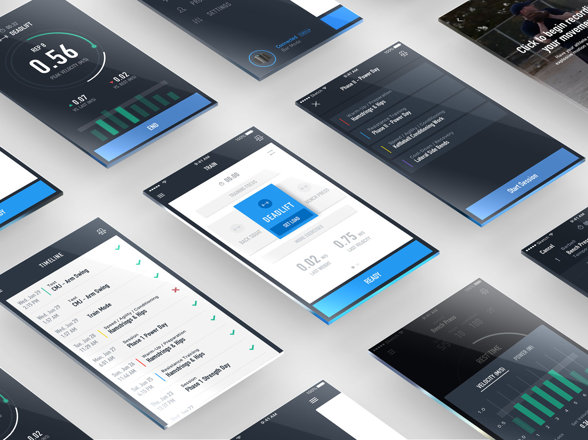
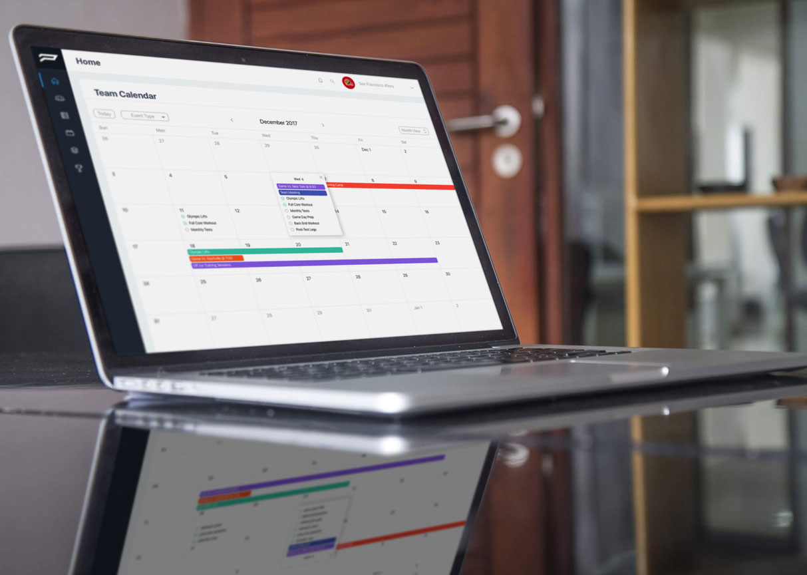

PUSH wearable device with mobile and desktop applications
Overview
PUSH is a wearable accelerometer designed for top-level athletics. The device works with both mobile and desktop applications to track and analyze athlete performance data. PUSH helps coaches quantify their athletes' outputs using velocity-based training (VBT) methodology, storing data to help plan and adjust future workouts.
As the UX/Product Designer, I was responsible for designing intuitive interfaces that made complex training data accessible to coaches while ensuring athletes could use the system seamlessly during intense workouts.
Project Details
Company: PUSH
Timeline: 2018-2019
Role: UX / Product Designer
Platforms: Mobile (iOS/Android), Desktop
The Product
PUSH is designed around the velocity-based training (VBT) philosophy. The device measures the speed at which an athlete can lift a barbell or perform an exercise. This velocity data tells coaches how difficult that workout is for the athlete, helping them see improvements, manage injuries, and motivate athletes.
My Role & Process
As the UX/Product Designer for both mobile and desktop applications, my involvement spanned the entire design process:
- User stories & UX flows: Started each feature by defining user needs and mapping out user journeys
- Wireframing & collaboration: Created wireframes and reviewed them with the development team to ensure technical feasibility
- Prototyping & user testing: Built interactive prototypes and tested them with coaches and athletes
- High-fidelity design: Created polished designs and prepared all assets for developers
- Additional work: Contributed to marketing, graphic design, video editing, and website development

Design Challenges
The main challenge was keeping the product as intuitive as possible for two distinct user groups:
For Coaches
Many coaches were not technically proficient, so I couldn't assume any functionality was obvious. The interface needed to be self-explanatory while still providing access to complex training data and analytics.
For Athletes
Athletes often used the product for the first time in the gym without any prior experimentation. They were focused on completing their workout as quickly as possible, so any friction in the interface could quickly become frustrating. Watching a full team complete a workout while using the band made me fully comprehend what athletes were going through. This observation fundamentally changed my design approach—I prioritized a free-flowing experience that reduced stoppages and let athletes focus on training.
Desktop Platform


The desktop platform gave coaches deeper analysis tools and team management capabilities. I designed data visualization interfaces that made complex metrics understandable at a glance while maintaining consistency with the mobile experience.
Opportunities & Impact
PUSH targeted a niche market in elite athletics, providing an opportunity to become the number one provider for fitness tech in velocity-based training. As a designer, I was constantly pushing to make the most usable and intuitive product to retain users and push the envelope on what was possible.
Consistent Growth
Throughout my time at PUSH, usage numbers and sales consistently beat previous years' performance.
User-Centered Approach
We spent significant time discussing specific use cases and issues with users, providing deep insights into the strength and conditioning world.
Marketing & Graphic Design


Key Learnings
Working at PUSH was a formative experience that taught me valuable lessons about product design in a startup environment:
- Wear many hats: Designing for every aspect of the company taught me versatility and how to think holistically about the user experience across all touchpoints.
- Observation is critical: Watching athletes use the product in real gym conditions revealed friction points that wouldn't have surfaced in controlled testing.
- Collaboration & compromise: Working closely with the development team taught me how to balance ideal design with technical constraints.
- Consistency at scale: Working on multiple products over an extended period challenged me to develop strong organizational skills and documentation practices. Building and maintaining our design system taught me about the challenges of staying consistent within a growing company.
- Process matters: I gained a new appreciation for seeing an idea progress from concept through to a shipped product used by real people.